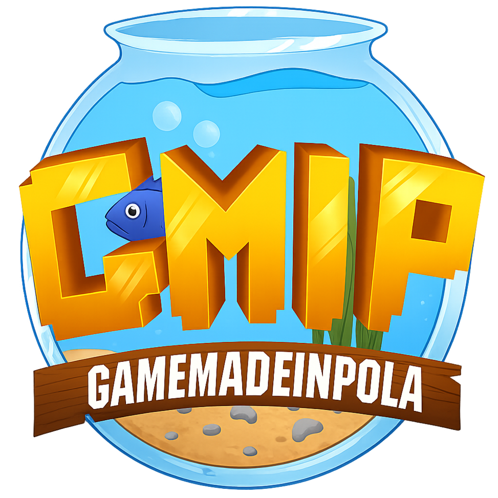
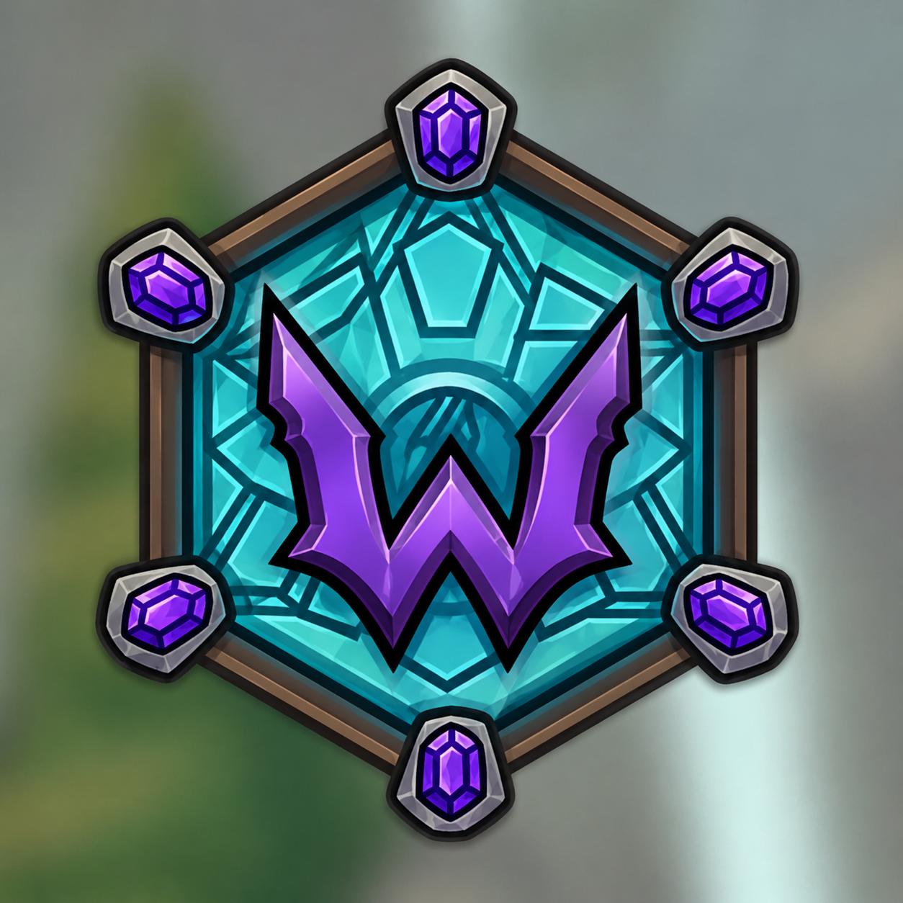

DcRubik
Desarrollador de Aplicaciones Multiplataforma (DAM)
Hola me llamo Jesús, vivo en España y tengo -- años. Bienvenidos a mi portafolio.
Proyectos Personales
Una muestra de los softwares, aplicaciones y sistemas que desarrollo de forma autónoma y durante mi formación en DAM.

GameMadeInPola
Proyecto Destacado

Wyrven
Proyecto Destacado
Herramientas y Tecnologias
Lenguajes de Programacion y Marcas
Bases de Datos
IDEs y Herramientas de Entorno
Enlaces
Trayectoria
Bachillerato Cientifico y Tecnologico
Estudiante
2022 - 2025
Grado Superior DAM
Estudiante
2025 - Presente
Proyectos Autonomos
Desarrollo de Software
2026 - Presente